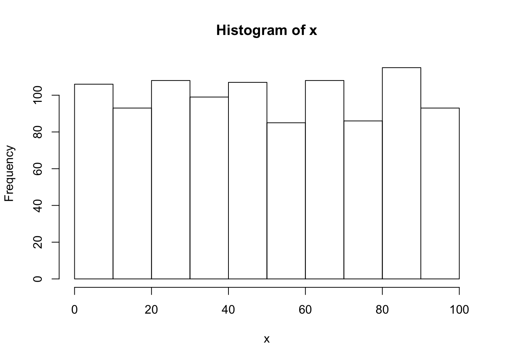
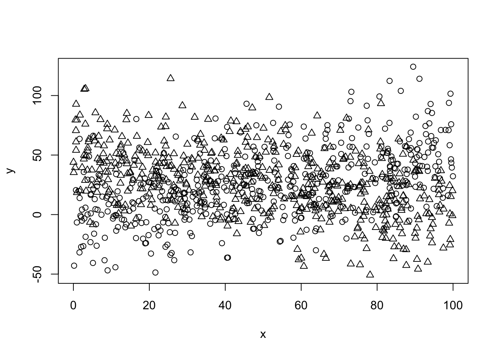
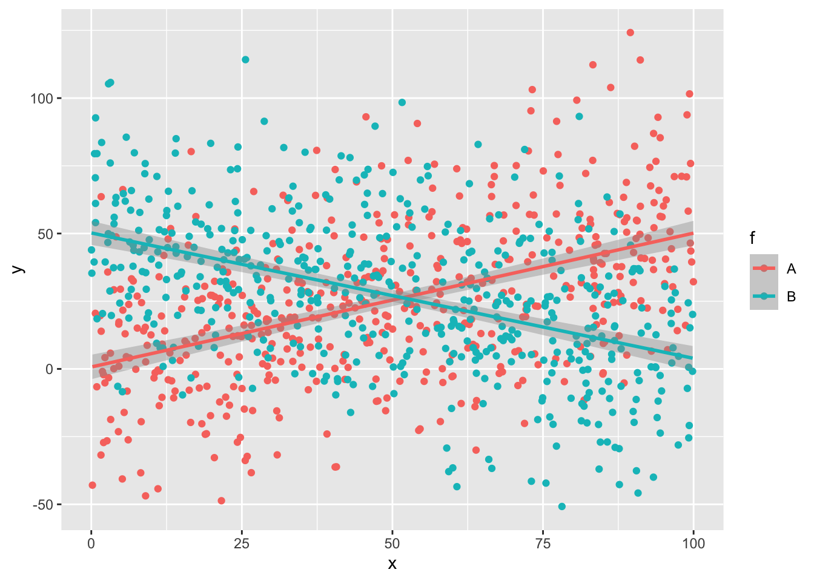

Section 8 Data reading / writing
library(ggplot2)
library(dplyr)##
## Attaching package: 'dplyr'## The following objects are masked from 'package:stats':
##
## filter, lag## The following objects are masked from 'package:base':
##
## intersect, setdiff, setequal, union8.1 A simple simulated dataset
x <- runif(1000, 0, 100)
hist(x)
f <- factor(c(rep("A",500),rep("B",500)))
head(f)## [1] A A A A A A
## Levels: A Btail(f)## [1] B B B B B B
## Levels: A By1 <- 0.5 * x[1:500] + rnorm(500,0,25)
y2 <- -0.5 * x[501:1000] + rnorm(500,0,25)
y <- c(y1,y2+50)
sim_data.df <- data.frame(y,x,f)
str(sim_data.df)## 'data.frame': 1000 obs. of 3 variables:
## $ y: num 60.1 29.7 -24.2 31.5 14.1 ...
## $ x: num 91.2 79.6 18.9 95.2 97.3 ...
## $ f: Factor w/ 2 levels "A","B": 1 1 1 1 1 1 1 1 1 1 ...plot(y~x, pch=as.integer(f))
ggplot(data=sim_data.df,aes(x=x,y=y,color=f)) +
geom_point() +
geom_smooth(method=lm)## `geom_smooth()` using formula 'y ~ x'
8.2 Saving and reading
… at last !
8.2.1 RData
save.image(file="results1.RData")
rm(list=ls())
load("results1.RData")
save("sim_data.df",file="results2.RData")
rm(list=ls())
load("results2.RData")8.2.2 Text files
write.table(sim_data.df,file="results.tsv",
quote=F,sep="\t",row.names = F)
rm(list=ls())
my_data.df <- read.table("results.tsv",
sep="\t",quote="",
header=T)
dim(my_data.df)## [1] 1000 3str(my_data.df)## 'data.frame': 1000 obs. of 3 variables:
## $ y: num 60.1 29.7 -24.2 31.5 14.1 ...
## $ x: num 91.2 79.6 18.9 95.2 97.3 ...
## $ f: Factor w/ 2 levels "A","B": 1 1 1 1 1 1 1 1 1 1 ...colnames(my_data.df)## [1] "y" "x" "f"summary(my_data.df)## y x f
## Min. :-50.797 Min. : 0.03501 A:500
## 1st Qu.: 6.281 1st Qu.:24.54960 B:500
## Median : 25.405 Median :48.63585
## Mean : 26.348 Mean :49.57381
## 3rd Qu.: 45.679 3rd Qu.:75.13851
## Max. :124.211 Max. :99.97250